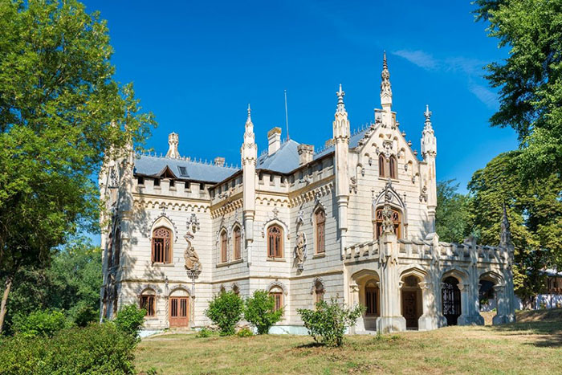

The Castle in Miclauseni, is an impressive Gothic-style building. According to the blog "Visit Iasi", the Sturdza Castle was built between 1880-1904 by Gheorghe Sturdza for his wife, the painter Maria Ghica, the daughter of the writer Ioan Ghica.
